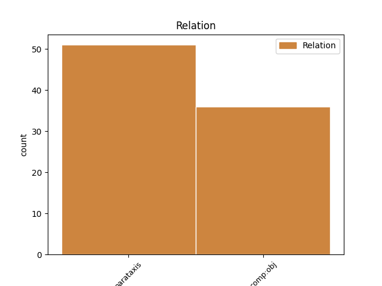
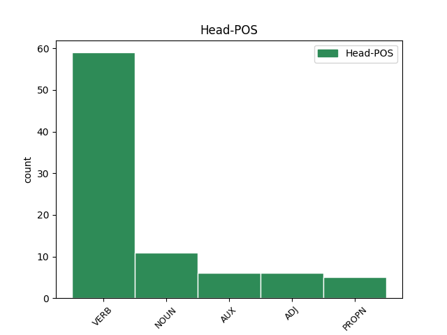
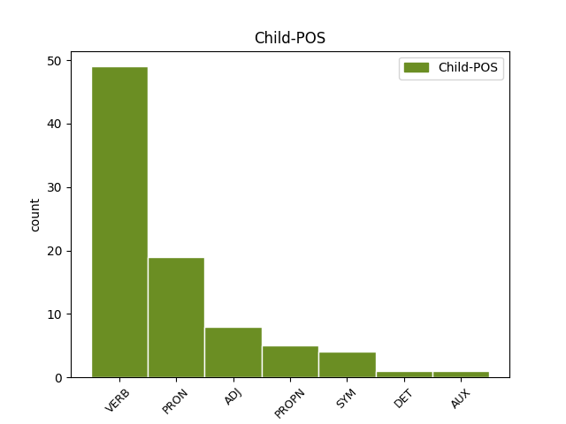

Distribution of features within this leaf



Agreement Rules sorted by frequency.
- When the dependent token is the parataxis(parataxis) of the head token, and the dependent token is VERB.
1 I _ _ _ _ 0 _ _ _
2 была _ _ _ _ 0 _ _ _
3 яшчэ _ _ _ _ 0 _ _ _
4 адна _ _ _ _ 0 _ _ _
5 , _ _ _ _ 0 _ _ _
6 апошняя _ _ _ _ 0 _ _ _
7 , _ _ _ _ 0 _ _ _
8 у _ _ _ _ 0 _ _ _
9 гонар _ _ _ _ 0 _ _ _
10 Більба _ _ _ _ 0 _ _ _
11 , _ _ _ _ 0 _ _ _
12 неспадзяванка _ _ _ _ 0 _ _ _
13 , _ _ _ _ 0 _ _ _
14 якая _ _ _ _ 0 _ _ _
15 ( _ _ _ _ 0 _ _ _
16 на _ _ _ _ 0 _ _ _
17 што _ _ _ _ 0 _ _ _
18 Гэндальф _ _ _ _ 0 _ _ _
19 і _ _ _ _ 0 _ _ _
20 спадзяваўся спадзявацца VERB VBC Aspect=Imp|Gender=Masc|Mood=Ind|Number=Sing|Tense=Past|VerbForm=Fin|Voice=Mid 23 parataxis _ SpaceAfter=No
21 ) _ _ _ _ 0 _ _ _
22 страшэнна _ _ _ _ 0 _ _ _
23 напалохала напалохаць VERB NN Aspect=Perf|Gender=Fem|Mood=Ind|Number=Sing|Tense=Past|VerbForm=Fin|Voice=Act 0 _ _ _
24 хобітаў _ _ _ _ 0 _ _ _
25 . _ _ _ _ 0 _ _ _
1 Ён _ _ _ _ 0 _ _ _
2 плыў _ _ _ _ 0 _ _ _
3 па _ _ _ _ 0 _ _ _
4 Мускуснай _ _ _ _ 0 _ _ _
5 затоцы _ _ _ _ 0 _ _ _
6 , _ _ _ _ 0 _ _ _
7 якая _ _ _ _ 0 _ _ _
8 вяла весці VERB VBC Aspect=Imp|Gender=Fem|Mood=Ind|Number=Sing|Tense=Past|VerbForm=Fin|Voice=Act 0 _ _ _
9 яго ён PRON PRP Case=Acc|Gender=Masc|Number=Sing|Person=3 8 comp:obj _ _
10 да _ _ _ _ 0 _ _ _
11 галоўнага _ _ _ _ 0 _ _ _
12 возера _ _ _ _ 0 _ _ _
13 і _ _ _ _ 0 _ _ _
14 галоўнай _ _ _ _ 0 _ _ _
15 з _ _ _ _ 0 _ _ _
16 яго _ _ _ _ 0 _ _ _
17 хацін _ _ _ _ 0 _ _ _
18 і _ _ _ _ 0 _ _ _
19 была _ _ _ _ 0 _ _ _
20 адным _ _ _ _ 0 _ _ _
21 з _ _ _ _ 0 _ _ _
22 асноўных _ _ _ _ 0 _ _ _
23 участкаў _ _ _ _ 0 _ _ _
24 яго _ _ _ _ 0 _ _ _
25 палявання _ _ _ _ 0 _ _ _
26 . _ _ _ _ 0 _ _ _
1 « _ _ _ _ 0 _ _ _
2 Цяпер _ _ _ _ 0 _ _ _
3 убрана _ _ _ _ 0 _ _ _
4 каля _ _ _ _ 0 _ _ _
5 11 _ _ _ _ 0 _ _ _
6 працэнтаў _ _ _ _ 0 _ _ _
7 пасадак _ _ _ _ 0 _ _ _
8 , _ _ _ _ 0 _ _ _
9 ураджайнасць _ _ _ _ 0 _ _ _
10 у _ _ _ _ 0 _ _ _
11 сярэднім _ _ _ _ 0 _ _ _
12 на _ _ _ _ 0 _ _ _
13 3 _ _ _ _ 0 _ _ _
14 - _ _ _ _ 0 _ _ _
15 5 _ _ _ _ 0 _ _ _
16 кілаграмаў _ _ _ _ 0 _ _ _
17 перавышае перавышаць VERB _ Aspect=Imp|Mood=Ind|Number=Sing|Person=3|Tense=Pres|VerbForm=Fin|Voice=Act 0 _ _ _
18 леташнюю леташнi ADJ _ Case=Acc|Degree=Pos|Gender=Fem|Number=Sing 17 comp:obj _ SpaceAfter=No
19 , _ _ _ _ 0 _ _ _
20 — _ _ _ _ 0 _ _ _
21 расказаў _ _ _ _ 0 _ _ _
22 Вадзім _ _ _ _ 0 _ _ _
23 Маханько _ _ _ _ 0 _ _ _
24 . _ _ _ _ 0 _ _ _
1 Да _ _ _ _ 0 _ _ _
2 таго _ _ _ _ 0 _ _ _
3 ж _ _ _ _ 0 _ _ _
4 насельнiцтва _ _ _ _ 0 _ _ _
5 Еўропы _ _ _ _ 0 _ _ _
6 iмклiва _ _ _ _ 0 _ _ _
7 старэе старэць VERB VBC Aspect=Imp|Mood=Ind|Number=Sing|Person=3|Tense=Pres|VerbForm=Fin|Voice=Act 0 _ _ _
8 , _ _ _ _ 0 _ _ _
9 што _ _ _ _ 0 _ _ _
10 таксама _ _ _ _ 0 _ _ _
11 павялiчвае павялiчваць VERB VBC Aspect=Imp|Mood=Ind|Number=Sing|Person=3|Tense=Pres|VerbForm=Fin|Voice=Act 7 comp:obj _ _
12 нагрузку _ _ _ _ 0 _ _ _
13 на _ _ _ _ 0 _ _ _
14 нацыянальныя _ _ _ _ 0 _ _ _
15 сiстэмы _ _ _ _ 0 _ _ _
16 аховы _ _ _ _ 0 _ _ _
17 здароўя _ _ _ _ 0 _ _ _
18 . _ _ _ _ 0 _ _ _
1 Акрамя _ _ _ _ 0 _ _ _
2 таго _ _ _ _ 0 _ _ _
3 , _ _ _ _ 0 _ _ _
4 фонд _ _ _ _ 0 _ _ _
5 заклікае заклікаць VERB VBC Aspect=Imp|Mood=Ind|Number=Sing|Person=3|Tense=Pres|VerbForm=Fin|Voice=Act 0 _ _ _
6 Беларусь Беларусь PROPN NNP Animacy=Inan|Case=Acc|Gender=Fem|Number=Sing 5 comp:obj _ _
7 неадкладна _ _ _ _ 0 _ _ _
8 ўвесці _ _ _ _ 0 _ _ _
9 мараторый _ _ _ _ 0 _ _ _
10 на _ _ _ _ 0 _ _ _
11 смяротнае _ _ _ _ 0 _ _ _
12 пакаранне _ _ _ _ 0 _ _ _
13 . _ _ _ _ 0 _ _ _
1 Самым _ _ _ _ 0 _ _ _
2 цёплым _ _ _ _ 0 _ _ _
3 красавіцкім _ _ _ _ 0 _ _ _
4 днём _ _ _ _ 0 _ _ _
5 у _ _ _ _ 0 _ _ _
6 Мінску _ _ _ _ 0 _ _ _
7 было _ _ _ _ 0 _ _ _
8 22 _ _ _ _ 0 _ _ _
9 красавіка _ _ _ _ 0 _ _ _
10 1950 _ _ _ _ 0 _ _ _
11 г. _ _ _ _ 0 _ _ _
12 ( _ _ _ _ 0 _ _ _
13 26 _ _ _ _ 0 _ _ _
14 °С _ _ _ _ 0 _ _ _
15 ) _ _ _ _ 0 _ _ _
16 , _ _ _ _ 0 _ _ _
17 а _ _ _ _ 0 _ _ _
18 самым _ _ _ _ 0 _ _ _
19 халодным халодны ADJ JJL Case=Ins|Degree=Pos|Gender=Masc|Number=Sing 0 _ _ _
20 -- _ _ _ _ 0 _ _ _
21 1 _ _ _ _ 0 _ _ _
22 красавіка _ _ _ _ 0 _ _ _
23 1923 _ _ _ _ 0 _ _ _
24 г. _ _ _ _ 0 _ _ _
25 ( _ _ _ _ 0 _ _ _
26 - _ _ _ _ 0 _ _ _
27 18,4 _ _ _ _ 0 _ _ _
28 °С °с SYM SYM Animacy=Anim|Case=Gen|Gender=Masc|Number=Sing 19 parataxis _ SpaceAfter=No
29 ) _ _ _ _ 0 _ _ _
30 . _ _ _ _ 0 _ _ _
1 « _ _ _ _ 0 _ _ _
2 Гэта _ _ _ _ 0 _ _ _
3 перспектыўны _ _ _ _ 0 _ _ _
4 кірунак кірунак NOUN _ Animacy=Inan|Case=Nom|Gender=Masc|Number=Sing 0 _ _ _
5 не _ _ _ _ 0 _ _ _
6 толькі _ _ _ _ 0 _ _ _
7 для _ _ _ _ 0 _ _ _
8 Беларусі _ _ _ _ 0 _ _ _
9 , _ _ _ _ 0 _ _ _
10 ён _ _ _ _ 0 _ _ _
11 актуальны актуальны ADJ _ Degree=Pos|Gender=Masc|Number=Sing|Variant=Short 4 parataxis _ _
12 па _ _ _ _ 0 _ _ _
13 ўсім _ _ _ _ 0 _ _ _
14 зямным _ _ _ _ 0 _ _ _
15 шары _ _ _ _ 0 _ _ _
16 , _ _ _ _ 0 _ _ _
17 — _ _ _ _ 0 _ _ _
18 падкрэсліў _ _ _ _ 0 _ _ _
19 Дзмітрый _ _ _ _ 0 _ _ _
20 Лужынскі _ _ _ _ 0 _ _ _
21 . _ _ _ _ 0 _ _ _
1 Уранава Уранава PROPN NNP Animacy=Anim|Case=Nom|Gender=Fem|Number=Sing 0 _ _ _
2 : _ _ _ _ 0 _ _ _
3 Першае _ _ _ _ 0 _ _ _
4 , _ _ _ _ 0 _ _ _
5 што _ _ _ _ 0 _ _ _
6 мяне _ _ _ _ 0 _ _ _
7 зацікавіла _ _ _ _ 0 _ _ _
8 , _ _ _ _ 0 _ _ _
9 было быць AUX VBC Aspect=Imp|Gender=Neut|Mood=Ind|Number=Sing|Tense=Past|VerbForm=Fin|Voice=Act 1 parataxis _ _
10 тое _ _ _ _ 0 _ _ _
11 , _ _ _ _ 0 _ _ _
12 што _ _ _ _ 0 _ _ _
13 я _ _ _ _ 0 _ _ _
14 яе _ _ _ _ 0 _ _ _
15 нідзе _ _ _ _ 0 _ _ _
16 не _ _ _ _ 0 _ _ _
17 чула _ _ _ _ 0 _ _ _
18 . _ _ _ _ 0 _ _ _
1 Начальнік _ _ _ _ 0 _ _ _
2 аддзела _ _ _ _ 0 _ _ _
3 метэаралагічных _ _ _ _ 0 _ _ _
4 прагнозаў _ _ _ _ 0 _ _ _
5 Рэспубліканскага _ _ _ _ 0 _ _ _
6 гідраметэацэнтра _ _ _ _ 0 _ _ _
7 Святлана _ _ _ _ 0 _ _ _
8 Рыбакова _ _ _ _ 0 _ _ _
9 20 _ _ _ _ 0 _ _ _
10 сакавіка _ _ _ _ 0 _ _ _
11 распавяла _ _ _ _ 0 _ _ _
12 , _ _ _ _ 0 _ _ _
13 што _ _ _ _ 0 _ _ _
14 тэмпература _ _ _ _ 0 _ _ _
15 ў _ _ _ _ 0 _ _ _
16 красавіку _ _ _ _ 0 _ _ _
17 складзе скласцi VERB VBC Aspect=Perf|Mood=Ind|Number=Sing|Person=3|Tense=Fut|VerbForm=Fin|Voice=Act 0 _ _ _
18 ў _ _ _ _ 0 _ _ _
19 сярэднім _ _ _ _ 0 _ _ _
20 5,8 _ _ _ _ 0 _ _ _
21 °С °с SYM SYM Animacy=Anim|Case=Gen|Gender=Masc|Number=Sing 17 comp:obj _ SpaceAfter=No
22 , _ _ _ _ 0 _ _ _
23 а _ _ _ _ 0 _ _ _
24 колькасць _ _ _ _ 0 _ _ _
25 ападкаў _ _ _ _ 0 _ _ _
26 будзе _ _ _ _ 0 _ _ _
27 ў _ _ _ _ 0 _ _ _
28 межах _ _ _ _ 0 _ _ _
29 сярэдніх _ _ _ _ 0 _ _ _
30 шматгадовых _ _ _ _ 0 _ _ _
31 значэнняў _ _ _ _ 0 _ _ _
32 -- _ _ _ _ 0 _ _ _
33 каля _ _ _ _ 0 _ _ _
34 44 _ _ _ _ 0 _ _ _
35 міліметраў _ _ _ _ 0 _ _ _
36 . _ _ _ _ 0 _ _ _
Disagree Examples:
1 Акрамя _ _ _ _ 0 _ _ _
2 цэнтральнага _ _ _ _ 0 _ _ _
3 офіса _ _ _ _ 0 _ _ _
4 ў _ _ _ _ 0 _ _ _
5 Сеуле _ _ _ _ 0 _ _ _
6 , _ _ _ _ 0 _ _ _
7 Daeryook _ _ _ _ 0 _ _ _
8 & _ _ _ _ 0 _ _ _
9 Aju _ _ _ _ 0 _ _ _
10 Internatonal _ _ _ _ 0 _ _ _
11 Law _ _ _ _ 0 _ _ _
12 Firm _ _ _ _ 0 _ _ _
13 мае мець VERB VBC Aspect=Imp|Mood=Ind|Number=Sing|Person=3|Tense=Pres|VerbForm=Fin|Voice=Act 0 _ _ _
14 свае _ _ _ _ 0 _ _ _
15 прадстаўніцтвы _ _ _ _ 0 _ _ _
16 ў _ _ _ _ 0 _ _ _
17 Еўрасаюзе _ _ _ _ 0 _ _ _
18 , _ _ _ _ 0 _ _ _
19 Кітаі _ _ _ _ 0 _ _ _
20 , _ _ _ _ 0 _ _ _
21 Расіі _ _ _ _ 0 _ _ _
22 і _ _ _ _ 0 _ _ _
23 ЗША _ _ _ _ 0 _ _ _
24 " _ _ _ _ 0 _ _ _
25 , _ _ _ _ 0 _ _ _
26 -- _ _ _ _ 0 _ _ _
27 распавялі распавяць VERB VBC Aspect=Perf|Mood=Ind|Number=Plur|Tense=Past|VerbForm=Fin|Voice=Act 13 parataxis _ _
28 ў _ _ _ _ 0 _ _ _
29 мінэканомікі _ _ _ _ 0 _ _ _
30 . _ _ _ _ 0 _ _ _
1 Таму _ _ _ _ 0 _ _ _
2 яны _ _ _ _ 0 _ _ _
3 не _ _ _ _ 0 _ _ _
4 аддавалі аддаваць VERB VBC Aspect=Imp|Mood=Ind|Number=Plur|Tense=Past|VerbForm=Fin|Voice=Act 0 _ _ _
5 справаздачы _ _ _ _ 0 _ _ _
6 ў _ _ _ _ 0 _ _ _
7 сваіх _ _ _ _ 0 _ _ _
8 дзеяннях _ _ _ _ 0 _ _ _
9 і _ _ _ _ 0 _ _ _
10 не _ _ _ _ 0 _ _ _
11 маглі _ _ _ _ 0 _ _ _
12 рэальна _ _ _ _ 0 _ _ _
13 ацаніць _ _ _ _ 0 _ _ _
14 небяспеку _ _ _ _ 0 _ _ _
15 і _ _ _ _ 0 _ _ _
16 разлічыць _ _ _ _ 0 _ _ _
17 свае _ _ _ _ 0 _ _ _
18 сілы _ _ _ _ 0 _ _ _
19 ў _ _ _ _ 0 _ _ _
20 крытычнай _ _ _ _ 0 _ _ _
21 сітуацыі _ _ _ _ 0 _ _ _
22 , _ _ _ _ 0 _ _ _
23 сказаў сказаць VERB VBC Aspect=Perf|Gender=Masc|Mood=Ind|Number=Sing|Tense=Past|VerbForm=Fin|Voice=Act 4 parataxis _ _
24 ён _ _ _ _ 0 _ _ _
25 . _ _ _ _ 0 _ _ _
1 Telegraf.by _ _ _ _ 0 _ _ _
2 : _ _ _ _ 0 _ _ _
3 Чым _ _ _ _ 0 _ _ _
4 вас вы PRON PRP Case=Acc|Number=Plur|Person=2|PronType=Prs 5 comp:obj _ _
5 зацікавіла зацікавіць VERB VBC Aspect=Perf|Gender=Fem|Mood=Ind|Number=Sing|Tense=Past|VerbForm=Fin|Voice=Act 0 _ _ _
6 беларуская _ _ _ _ 0 _ _ _
7 мова _ _ _ _ 0 _ _ _
8 ? _ _ _ _ 0 _ _ _
1 Вранава Вранава PROPN NNP Animacy=Anim|Case=Nom|Gender=Fem|Number=Sing 0 _ _ _
2 : _ _ _ _ 0 _ _ _
3 Беларусы _ _ _ _ 0 _ _ _
4 мне _ _ _ _ 0 _ _ _
5 расказвалі расказваць VERB VBC Aspect=Imp|Mood=Ind|Number=Plur|Tense=Past|VerbForm=Fin|Voice=Act 1 parataxis _ _
6 аб _ _ _ _ 0 _ _ _
7 сваёй _ _ _ _ 0 _ _ _
8 слаўнай _ _ _ _ 0 _ _ _
9 гісторыі _ _ _ _ 0 _ _ _
10 . _ _ _ _ 0 _ _ _
1 Калі _ _ _ _ 0 _ _ _
2 я _ _ _ _ 0 _ _ _
3 іх яны PRON PRP Case=Acc|Number=Plur|Person=3|PronType=Prs 4 comp:obj _ _
4 запытвала запытваць VERB VBC Aspect=Imp|Gender=Fem|Mood=Ind|Number=Sing|Tense=Past|VerbForm=Fin|Voice=Act 0 _ _ _
5 , _ _ _ _ 0 _ _ _
6 чаму _ _ _ _ 0 _ _ _
7 яны _ _ _ _ 0 _ _ _
8 гавораць _ _ _ _ 0 _ _ _
9 , _ _ _ _ 0 _ _ _
10 што _ _ _ _ 0 _ _ _
11 любяць _ _ _ _ 0 _ _ _
12 сваю _ _ _ _ 0 _ _ _
13 краіну _ _ _ _ 0 _ _ _
14 , _ _ _ _ 0 _ _ _
15 шануюць _ _ _ _ 0 _ _ _
16 гісторыю _ _ _ _ 0 _ _ _
17 , _ _ _ _ 0 _ _ _
18 не _ _ _ _ 0 _ _ _
19 любяць _ _ _ _ 0 _ _ _
20 рускіх _ _ _ _ 0 _ _ _
21 -- _ _ _ _ 0 _ _ _
22 але _ _ _ _ 0 _ _ _
23 размаўляюць _ _ _ _ 0 _ _ _
24 па-расейску _ _ _ _ 0 _ _ _
25 , _ _ _ _ 0 _ _ _
26 а _ _ _ _ 0 _ _ _
27 не _ _ _ _ 0 _ _ _
28 па-беларуску _ _ _ _ 0 _ _ _
29 , _ _ _ _ 0 _ _ _
30 я _ _ _ _ 0 _ _ _
31 чула _ _ _ _ 0 _ _ _
32 вельмі _ _ _ _ 0 _ _ _
33 дзіўныя _ _ _ _ 0 _ _ _
34 адказы _ _ _ _ 0 _ _ _
35 : _ _ _ _ 0 _ _ _
36 гэта _ _ _ _ 0 _ _ _
37 ўжо _ _ _ _ 0 _ _ _
38 немагчыма _ _ _ _ 0 _ _ _
39 ... _ _ _ _ 0 _ _ _